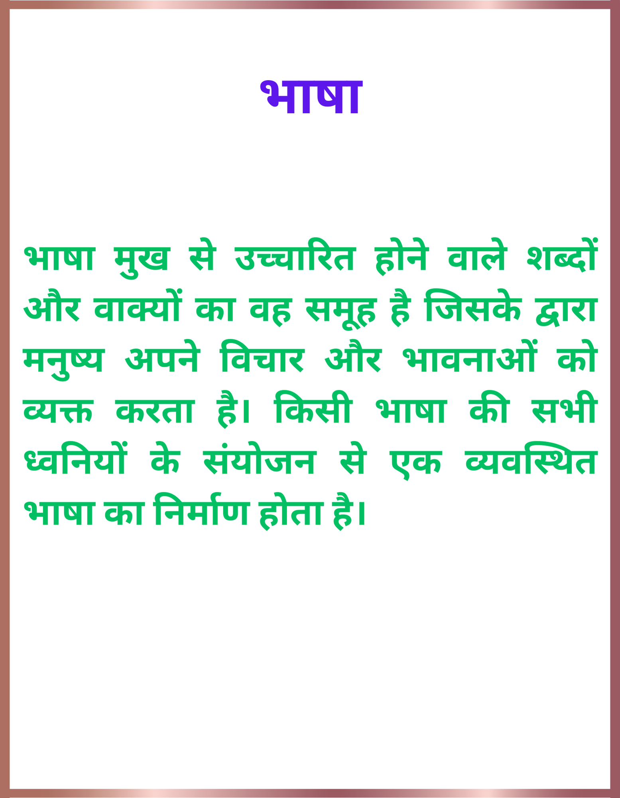

भाषा और व्याकरण
भाषा
भाषा मुख से उच्चारित होने वाले शब्दों और वाक्यों का वह समूह है जिसके द्वारा मनुष्य अपने विचार और भावनाओं को व्यक्त करता है। किसी भाषा की सभी ध्वनियों के संयोजन से एक व्यवस्थित भाषा का निर्माण होता है।
भाषा क्या है?
भाषा वह साधन है जिसके माध्यम से हम सोचते हैं और अपने विचारों को व्यक्त करते हैं। मनुष्य अपने विचारों, भावनाओं और अनुभूतियों को भाषा के माध्यम से ही व्यक्त करता है।
भाषा की परिभाषा
 "भाषा एक ऐसा साधन है जिसके द्वारा हम अपने विचारों को व्यक्त कर सकते हैं और इसके लिए हम आवश्यक ध्वनियों का प्रयोग करते हैं।"
भाषा का अर्थ
भाषा का अर्थ है - ध्वनियों और शब्दों का समूह जिसके माध्यम से मनुष्य अपने विचारों, भावनाओं, और अभिव्यक्तियों को अद्यतन करता है और दूसरों के साथ संवाद करता है। यह एक सामाजिक, सांस्कृतिक, और मानवीय उपकरण है जो व्यक्ति को समाज में समानता का अनुभव करने में मदद करता है।
भाषा में शैली
 भाषा में शैली एक व्यक्ति या समूह के व्यक्तित्व, सोच, और अभिव्यक्ति के तरीके का प्रतिबिम्ब होता है। यह उन सांस्कृतिक, सामाजिक, और भाषाई नियमों का परिणाम होता है जो व्यक्ति के विचारों और अभिव्यक्तियों को प्रभावित करते हैं।
भाषा में शैली एक व्यक्ति या समूह के व्यक्तित्व, सोच, और अभिव्यक्ति के तरीके का प्रतिबिम्ब होता है। यह उन सांस्कृतिक, सामाजिक, और भाषाई नियमों का परिणाम होता है जो व्यक्ति के विचारों और अभिव्यक्तियों को प्रभावित करते हैं।
भाषा की शैलियों में कई प्रकार होते हैं, जैसे कि साहित्यिक, वैज्ञानिक, सामाजिक, राजनीतिक, वाणिज्यिक, तकनीकी, आदि। हर शैली अपने विशेष संकेत, शब्दावली, और वाक्य प्रणाली के साथ आती है, जो उसके उद्देश्य और प्रयोजनों को प्रकट करने में मदद करते हैं।
शैली व्यक्ति के लेखनी, वाणी, और साहित्य के विकास में महत्वपूर्ण भूमिका निभाती है, और उसकी व्यक्तित्विकता को प्रकट करती है। इसलिए, शैली भाषा के अद्वितीय पहचानकर्ता होती है जो एक व्यक्ति के या समूह के विचारों और अभिव्यक्तियों को निर्दिष्ट करती है।
भाषा के प्रकार (भेद)
भाषा के तीन प्रकार के रूप होते हैं-
मौखिक भाषा
लिखित भाषा
सांकेतिक भाषा
मौखिक भाषा
भाषा के जिस रूप से हम अपने विचार एवं भाव बोलकर प्रकट करते हैं अथवा दूसरों के विचार अथवा भाव सुनकर ग्रहण करते हैं, उसे मौखिक भाषा कहते हैं। उदाहरण के लिए- जब हम किसी से फोन पर बात करते हैं तो भाषा के मौखिक रूप का प्रयोग करते हैं।
भाषा का मौखिक रूप सीखने के लिए विशेष प्रयत्न नहीं करना पड़ता है, उदाहरण के लिए हम अपनी-अपनी मातृभाषा को परिवार और समाज से अनुकरण द्वारा स्वयं सीख जाते हैं।
लिखित भाषा
जब हम मन के भावों तथा विचारों को लिखकर प्रकट करते हैं, तो वह भाषा का लिखित रूप कहलाता है। लिखित भाषा के उदाहरण निम्न है- पत्र, लेख, समाचार पत्र, कहानी, जीवनी संस्मरण, तार इत्यादि।
भाषा का लिखित रूप सीखने के लिए विशेष अध्ययन की आवश्यकता होती है। किसी भी भाषा को लिखने के लिए उसके वर्णों, शब्दों, वाक्यों अर्थात व्याकरण का सम्पूर्ण ज्ञान होना जरूरी है।
सांकेतिक भाषा
संकेत भाषा या सांकेतिक भाषा एक ऐसी भाषा है, जिसको हम विभिन्न प्रकार के दृश्य संकेतों (जैसे हस्तचालित संकेत, अंग-संकेत) के माध्यम से व्यक्त करतें हैं। इसमें बोलनें वाले के विचारों को धाराप्रवाह रूप से व्यक्त करने के लिए, हाथ के आकार, विन्यास और संचालन, बांहों या शरीर तथा चेहरे के हाव-भावों का एक साथ उपयोग किया जाता है।
उदाहरण के लिए- छोटे बच्चे और उसकी माँ के बीच की भाषा सांकेतिक भाषा है। छोटा बच्चा अपनी समस्याओं और इच्छाओं को विभिन्न संकेतों के माध्यम से बताता है, जैसे- अधिकतर बच्चों को जब भूख लगती है तो वह रोने लगते हैं।
सांकेतिक भाषा का प्रयोग अधिकतर ऐसे व्यक्तियों के लिए होता जो शारीरिक रूप से दिव्यांग होते है, जैसे- कान और मुख से अपंग।
भाषा के अंग
भाषा के मुख्य पाँच अंग होते हैं, जो कि इस प्रकार हैं- ध्वनि, वर्ण, शब्द, वाक्य और लिपि। सभी भाषा के अंगों का विवरण निम्नलिखित है-
- ध्वनि–हमारे मुख से निकलने प्रत्येक स्वतंत्र आवाज ध्वनि होती है। और ये ध्वनियाँ हमेशा मौखिक भाषा में प्रयोग होतीं हैं।
- वर्ण– वह मूल ध्वनि जिसके और टुकड़े ना किये जा सके, वह वर्ण कहलाते हैं। जैसे- अ, क्, भ्, म्, त् आदि।
- शब्द– वर्णों का वह समूह जिसका कोई अर्थ निकलता है, उसे शब्द कहते हैं। जैसे- क् + अ + म् + अ +ल् + अ = कमल, भ् + आ + ष् + आ = भाषा।
- वाक्य– सार्थक शब्दों का वह समूह जिसका कोई अर्थ निकलता है, उसे वाक्य कहते हैं। जैसे- कमल हिन्दी भाषा पढ़ रहा है। यदि हम इस वाक्य को “हिन्दी है रहा कमल पढ़ भाषा” लिख दे दो इसका कोई अर्थ नहीं निकलता, तो हम इसे वाक्य नहीं कह सकते।
- लिपि– मौखिक भाषा को लिखित रूप में व्यक्त करने के लिए जिन चिन्हों का प्रयोग किया जाता है, उन्हें लिपि कहते हैं। जैसे- हिन्दी भाषा की देवनागरी लिपि है।
भाषा की प्रक्रिया
भाषा की प्रक्रिया एक जटिल और बहुआयामी प्रक्रिया है जिसमें विचारों को ध्वनियों, शब्दों, और वाक्यों के माध्यम से व्यक्त किया जाता है। यह प्रक्रिया मुख्यतः चार चरणों में विभाजित की जा सकती है:
1. अवधारणात्मक चरण (Conceptual Stage): इस चरण में व्यक्ति अपने मस्तिष्क में किसी विचार, भावना या जानकारी को उत्पन्न करता है। यह आंतरिक मानसिक प्रक्रिया है जिसमें व्यक्ति यह निर्णय लेता है कि उसे क्या कहना है।
2. भाषिक योजना चरण (Linguistic Planning Stage):इस चरण में मस्तिष्क विचारों को भाषा में बदलता है। इसमें व्याकरण, शब्दावली, और वाक्य संरचना का चयन शामिल है। मस्तिष्क यह तय करता है कि कौन से शब्दों और वाक्यों का प्रयोग किया जाएगा।
3. ध्वनि योजना चरण(Phonetic Planning Stage): इस चरण में मस्तिष्क भाषिक योजनाओं को ध्वनियों में बदलने के लिए योजना बनाता है। इसमें प्रत्येक शब्द और वाक्य के ध्वन्यात्मक गुणधर्म और उच्चारण की योजना बनाई जाती है।
4. उत्पादन चरण (Production Stage): इस अंतिम चरण में योजना बनाई गई ध्वनियों को वाणी के माध्यम से उच्चारित किया जाता है। इसमें श्वास प्रणाली, स्वर तंत्र, और मुख के अंगों का समन्वय शामिल होता है, जिससे ध्वनियाँ उत्पन्न होती हैं और भाषा का उच्चारण होता है।
5. श्रवण और समझ (Hearing and Comprehension): जब कोई व्यक्ति भाषा का उच्चारण करता है, तो श्रोता इसे सुनते हैं और अपने मस्तिष्क में प्राप्त ध्वनियों को प्रक्रिया करते हैं। इस प्रक्रिया में श्रोता ध्वनियों को पहचानते हैं, उन्हें शब्दों और वाक्यों में विभाजित करते हैं, और फिर उन विचारों और भावनाओं को समझते हैं जिन्हें वक्ता व्यक्त कर रहा है।
6. प्रतिक्रिया (Feedback): भाषा की प्रक्रिया में प्रतिक्रिया भी शामिल होती है। जब श्रोता वक्ता की बात को समझ लेते हैं, तो वे उसकी प्रतिक्रिया देते हैं। यह प्रतिक्रिया वाणी, इशारों, या किसी अन्य संचार माध्यम से हो सकती है।
बोली, विभाषा और भाषा
भाषा, बोली, और विभाषा (उपभाषा) के बीच महत्वपूर्ण भिन्नताएँ हैं, जो इनकी परिभाषाओं और उपयोग में स्पष्ट होती हैं। ये तीनों संचार के साधन हैं, लेकिन उनकी प्रकृति, क्षेत्र और उपयोग के आधार पर वे अलग-अलग रूप में परिभाषित होते हैं।भाषा (Language): भाषा एक व्यापक और समृद्ध प्रणाली है, जिसमें ध्वनियों, शब्दों, वाक्यों, और व्याकरणिक संरचनाओं का समावेश होता है। यह एक पूरी संचार प्रणाली है जो एक बड़े समुदाय द्वारा साझा की जाती है और जिसमें साहित्य, शिक्षा, प्रशासन आदि शामिल होते हैं। उदाहरण: हिंदी, अंग्रेजी, संस्कृत, फ्रेंच
बोली (Dialect): बोली एक विशिष्ट क्षेत्र या समुदाय द्वारा बोली जाने वाली भाषा का एक रूप है। यह मुख्य भाषा की विभिन्न ध्वन्यात्मक, शब्दावली और व्याकरणिक विविधताओं के साथ एक रूप होती है। बोली में क्षेत्रीय, सामाजिक, या सांस्कृतिक विविधता हो सकती है। उदाहरण: हिंदी की बोलियाँ: ब्रजभाषा, अवधी, मैथिली अंग्रेजी की बोलियाँ: ब्रिटिश अंग्रेजी, अमेरिकी अंग्रेजी, ऑस्ट्रेलियाई अंग्रेजी
विभाषा या उपभाषा (Subdialect): विभाषा, जिसे उपभाषा भी कहा जाता है, बोली का एक और भी संकीर्ण और विशेष रूप है। यह एक छोटे क्षेत्र या समुदाय द्वारा उपयोग की जाने वाली बोली की अधिक सूक्ष्म विविधता है। विभाषा में अधिक सूक्ष्म ध्वन्यात्मक और व्याकरणिक अंतर होते हैं। उदाहरण: ब्रजभाषा की विभाषा: पश्चिमी ब्रजभाषा, पूर्वी ब्रजभाषा
भाषा और लिपि
मौखिक भाषा या उच्चारित भाषा को स्थायी रूप देने के लिए भाषा के लिखित रूप का विकास हुआ। प्रत्येक ध्वनि के लिए लिखित चिह्न या वर्ण बनाए गए। वर्णों की इसी व्यवस्था को ‘लिपि‘ कहा जाता है। वास्तव में लिपि ध्वनियों को लिखकर प्रस्तुत करने का एक ढंग है।
सभ्यता के विकास के साथ-साथ मनुष्य के लिए अपने-अपने भावों और विचारों को स्थायित्व देना, दूर-दूर स्थित लोगों से सम्पर्क बनाए रखना तथा संदेशों और समाचारों के आदान-प्रदान के लिए मौखिक भाषा से काम चला पाना असम्भव हो गया। अनुभव की गई यह आवश्यकता ही लिपि के विकास का कारण बनी।
मौखिक ध्वनियों को लिखित रूप में प्रकट करने के लिए निश्चित किए गए चिह्नों को लिपि कहते हैं।
संसार की विभिन्न भाषाओं को लिखने के लिए अनेक लिपियाँ प्रचलित हैं। हिन्दी, मराठी, नेपाली और संस्कृत भाषाएँ देवनागरी लिपि में लिखी जाती हैं। देवनागरी का विकास ब्राह्मी लिपि से हुआ है। ब्राह्मी वह प्राचीन लिपि है जिससे हिन्दी, बंगला, गुजराती, आदि भाषाओं की लिपियों का विकास हुआ।
देवनागरी बाईं ओर से दाईं ओर को लिखी जाती है। यह बहुत ही वैज्ञानिक लिपि है। भारत की अधिकांश भाषाओं की लिपियाँ बाईं ओर से दाईं ओर को ही लिखी जाती हैं। केवल ‘फारसी’ लिपि जिसमें उर्दू भाषा लिखी जाती है, दाईं ओर से बाईं ओर को लिखी जाती है।

भाषा और लिपि में अंतर
| भाषा (Language) | लिपि (Script) |
|---|---|
| प्रत्येक भाषा की अपनी ध्वनियाँ होती है। | सामान्यतः एक लिपि किसी भी भाषा में लिखी जा सकती है। |
| भाषा सूक्ष्म होती है। | लिपि स्थूल होती है। |
| भाषा में अपेक्षाकृत अस्थायित्व होता है, क्योंकि भाषा उच्चरित होते ही गायब हो जाती है। |
लिपि में अपेक्षाकृत स्थायित्व होता है, क्योंकि किसी भी लिपि को लिखकर ही व्यक्त किया जा सकता है। |
| भाषा ध्वन्यात्मक होती है। | लिपि दृश्यात्मक होती है। |
| भाषा तुरंत प्रभावकारी होती है। | लिपि थोड़ी विलंब से प्रभावकारी होती है। |
| भाषा ध्वनि संकेतों की व्यवस्था है। | लिपि वर्ण संकेतों की व्यवस्था है। |
| भाषा ही संगीत का माध्यम है। | परंतु लिपि नहीं। |
Important Links